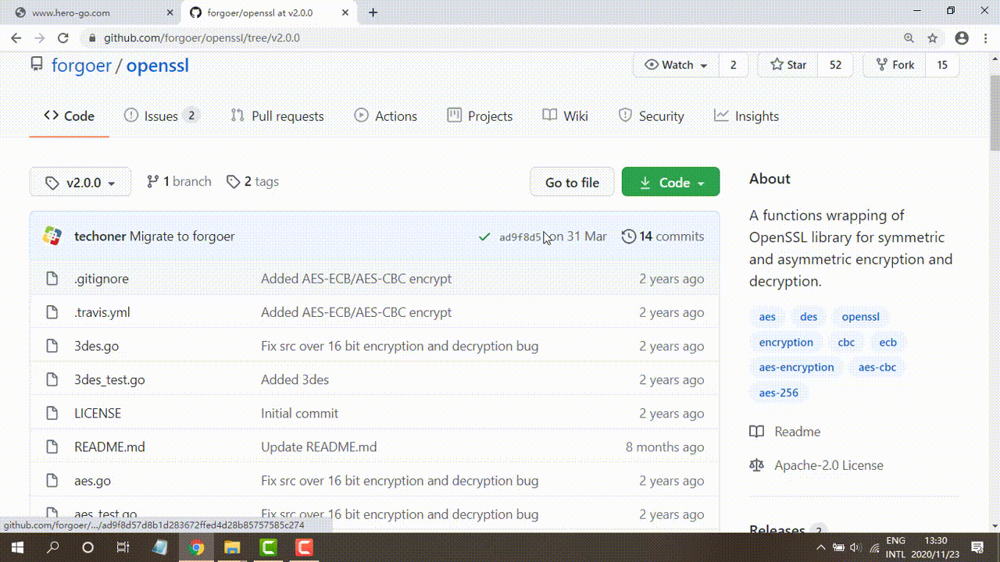
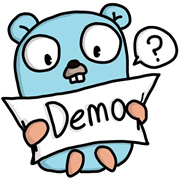

DownLoad:
1. 20k Subjects Info In RQ1
2. Benchmark Dataset (132 DM issues and subjects
used for evaluation in RQ4)
3. Empirical Study Dataset (151 DM issues for
RQ2&3)
1. 20k Subjects Info In RQ1
2. Benchmark Dataset (132 DM issues and subjects
used for evaluation in RQ4)
3. Empirical Study Dataset (151 DM issues for
RQ2&3)
-
How Hero works?Dependency Management Issue DiagnosisBuilding a healthy Golang ecosystemDiagnose
-
Help
× 1. Input the name and version tag number of your Go project released on GitHub.
2. Press the "Start" button, we will provide the dependency graph, then help you diagnose the dependency conflict issues in your project and provide the detailed root causes and suggested fixing solutions. In addition to version tag number, you can also input the commit hash code of your project.
In addition to version tag number, you can also input the commit hash code of your project. heroAnalyzing... The process may take you several minutes.Most functions are working, while some are under tuning for performance...StartDependency ModelRoot causeSuggested solutions -
Table Statistics of dependency management issues reported by HERO Status 1: Issues fixed using our suggestions; Status 2: Issues under fixing using our suggestions; Status 3: Issues confirmed, but fixing not decided; Status 4: Issues fixed using other suggestions; Status 5: Issues pending; Issue ID ♠: Migration to Go Modules conducted (desired); ID Project Name Commit ID Last Update Time Issue ID Issue Type Issue Status
{% comment %} - {% endcomment %} {% comment %}
-
Detailed information of 132 collected DM issues used in the benchmark dataset Note：missed cases ID Issue ID Project Name Detected Version Issue Type {% endcomment %}
-
-
 Constructing dependency modelHero extracts dependencies among Golang projects and their library-referencing modes
Constructing dependency modelHero extracts dependencies among Golang projects and their library-referencing modes -
 Detecting dependency Management (DM) issuesHero focuses on detecting DM issues that have not yet manifested, but would probably happen when the concerned projects have their upstream or downstream projects upgraded
Detecting dependency Management (DM) issuesHero focuses on detecting DM issues that have not yet manifested, but would probably happen when the concerned projects have their upstream or downstream projects upgraded -
 Customizing fixing suggestionsHERO suggests applicable solutions to developers by customizing the template with potential impact analysis
Customizing fixing suggestionsHERO suggests applicable solutions to developers by customizing the template with potential impact analysis
-
The dependency model D(Pv) for version v of a project P is a 3-tuple (Pr, Ds, Us):
1. Pr = (ip, md, t, vd) records the information of the current project.
ip: Pv's declared module path;
md: Pv's library-referencing mode (GOPATH or Go Modules);
t: whether Pv depends on any DM tool (yes or no);
vd: a collection of import paths (set of URLs) referencing those upstream libraries that are maintained in Pv's Vendor directory but cannot be found
in the repositories pointed to by URLs (e.g., due to removal or renaming);
2. Ds = {dp1 , dp2 , · · · , dpn} is a collection of Pv's downstream projects dpi , where
dpi = (vi , ipi , mdi , ti) .
vi: dpi's latest version number;
ipi: dpi's declared module path;
mdi: dpi's library-referencing mode (GOPATH or Go Modules);
ti: whether Pv depends on any DM tool (yes or no);
3. Us = {up1 , up2 , · · · , upn} is a collection of Pv's upstream projects upi , where
upi = (vi, ipi, mdi, Si, Ii).
vi: upi's latest version number;
ipi: upi's declared module path;
mdi: upi's library-referencing mode (GOPATH or Go Modules);
Si: If upi is a v2+ project in Go Modules, field Si denotes whether it is released
by the major branch strategy (yes or no), implying whether ipi is a virtual import path;
Ii: If both projects upi and Pv are in Go Modules, field Ii denotes whether upi
is transitively introduced into Pv by any project in GOPATH -
Scenarios for which HERO reports issues:
Type A:

Figure (a) shows a scenario, where a module-unaware project Pv references a specific version of its upstream project upa in Go Modules. This version is older than upa’s latest version, which newly introduces another upstream project upb in Go Modules with a v2+ version released using the major branch strategy. Build errors do not occur in Pv when it references upa’s old version. However, if Pv updates upa to reference the latest version, it will not be able to recognize upb’ s virtual import path. When seeing such a possibility, Hero reports a warning of Type A issue for Pv .
Type B.1:

Figure (b) shows a scenario, where project Pv in Go Modules transitively references a v2+ upstream project upb in Go Modules (released by the major branch strategy) through another module-unaware project upa in GOPATH. Since GOPATH and Go Modules interpret import paths differently, upa would use upb’s latest version (e.g., v2.0.0), while Pv would use upb’s old v0/v1 version, causing inconsistencies. Thus, Hero reports a warning of Type B.1 issue for Pv .
Type B.2:

Figure (c) shows a scenario, where project Pv in GOPATH references an upstream project upa maintained only in its Vendor directory (i.e., upa has already been deleted or relocated). No build errors occur when Pv has no downstream projects in Go Modules. However, if Pv has such downstream projects, the latter would fetch upa via its import path (i.e., hosting repository) rather than from Pv’s Vendor directory, causing build errors due to failing to fetch upa . Thus, Hero reports a warning of Type B.2 issue for Pv .
Type C:

Figure (d) shows a scenario, where project Pv in Go Modules violates SIV rules. The violation may not introduce build errors when Pv has no downstream projects in Go Modules. However, build errors would occur if such projects exist in future. Thus, Hero reports a warning of Type C issue for Pv .
Detection process:

Note:
1. REST APIs "repository_url" and "code_search_url" are defined by GitHub Rest API v3
standards(https://developer.github.com/v3/) ;
2. Si denotes whether upi is released by the major branch strategy (yes or no)
3. Ii denotes whether upi is transitively introduced into Pv by any project in GOPATH (yes or no)
4. vd denotes a collection of import paths (set of URLs) referencing those upstream libraries that are maintained in
Pv’s Vendor directory but cannot be found in the repositories pointed to by URLs (e.g., due to removal or
renaming); -
For each detected DM issue, Hero suggests all applicable solutions to developers by customizing the template with potential impact analysis based on the associated dependency model.
Templates of customized fixing suggestions for three types of DM issues are described as follows, where Pv is the project under analysis; mbs is short for the major branch strategy; mss is short for the major subdirectory strategy; "S1-8" denote fixing solutions 1-8; ab1-3 and uc1-4 correspond to the additional benefits and undesired consequences of fixing solutions; info is the customized information by Hero.
Fixing Type A DM issues
S1→Let Pv migrate to Go Modules
ab1: Promoting the migration to Go Modules;
uc1: Breaking compatibility with Pv’ s downstream module-unaware projects: dp1 , dp2 ,…, dpn ∈ Ds (in GOPATH and using DM tools);
S2→Let Pv’ s v2+ upstream project upi (in Go Modules and released by mbs) roll back to GOPATH
ab2: Supporting upi’ s downstream module-unaware projects;
uc2: Hindering the migration to the ecosystem;
S3→Let Pv’s v2+ upstream project upi in Go Modules change its releasing strategy from mbs to mss
ab2: Supporting upi’ s downstream module-unaware projects;
uc3: Increasing maintenance efforts;
S4→Let Pv maintain v2+ upstream project upi (in Go Modules, released by mbs) in Vendor directory uc3: Increasing maintenance efforts;
uc4: Introducing potential DM issues in future;
Fixing Type B.1 DM issues
S5→Let Pv reference upstream project upi using a replace directive with upi’ s latest version number to avoid using its problematic import path
uc3: Increasing maintenance efforts;
Note: upi is a v2+ project in Go Modules (release by mbs), and transitively referenced by Pv through another module-unaware upstream project
Fixing Type B.2 DM issues
S6→Let Pv update import path for its upstream project upi that has changed its hosting site names
ab3: Supporting Pv’s downstream module-aware projects: dp1, dp2,…, dpn ∈ Ds(in Go Moules);
Fixing Type C DM issues
S2→Let Pv roll back to GOPATH
ab2: Supporting Pv’ s downstream module-unaware projects: dp1, dp2,…, dpn ∈ Ds (in GOPATH and using DM tools);
uc2: Hindering the migration to the ecosystem;
S5→Let Pv’ s downstream projects dpi (in Go Modules) use a replace directive with version number v to avoid using Pv’ s problematic import path
uc3: Increasing maintenance efforts;
S7→Let Pv fix its configuration items to strictly follow SIV rules
ab3: Supporting Pv’s downstream module-aware projects: dp1, dp2,…, dpn ∈ Ds (in Go Moules);
uc1: Breaking compatibility with Pv’s downstream module-unaware projects: dp1, dp2,…, dpn ∈ Ds (in GOPATH and using DM tools);
S8→Let Pv’s downstream projects upi (in Go Modules) use a hash commit ID corresponding to version Pv to replace its problematic version number
uc3: Increasing maintenance efforts.
-